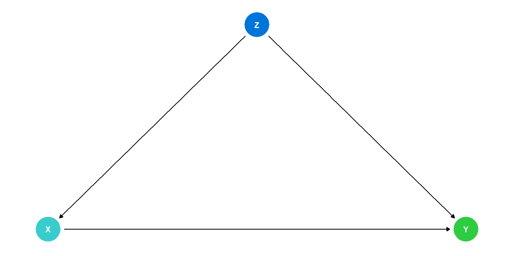
Impact evaluation using secondary data
Tobias Rüttenauer
2023-11-15
Measuring Impact
Some recommendations
- Econometrics by Ryan Safner
- Program Evaluation by Andrew Heiss
- Mastering Metrics by Angrist and Pischke (2015)
- The Effect by Huntington-Klein (2021)
These slides use materials from the amazing course materials above.
Objectives of Impact Evaluation
Impact Evaluation is a systematic process that assesses the outcomes and impacts of a program, project, or policy intervention.
Typical questions
- Did the intervention make a difference?
- To what extent can a specific impact be attributed to the intervention?
- How has the intervention made a difference?
- Will the intervention work elsewhere?
Types of Impact Evaluation
- Impact evaluation can take various forms, depending on the context and objectives.
Qualitative
- Interviews
- Focus Groups
- Case Studies
Quantitative
- Causal model of impact using DAGS
- Randomized Controlled Trials (RCTs)
- Instrumental Variable (IV)
- Regression Discontinuity Design (RDD)
- Difference-in-Difference (DiD)
Defining a causal model
What IS Causation?
- \(X\) causes \(Y\) if we can intervene and change \(X\) without changing anything else, and \(Y\) changes
- \(Y\) “listens to” \(X\)
- \(X\) may not be the only thing that causes \(Y\)!

What IS Causation?
- \(X\) causes \(Y\) if we can intervene and change \(X\) without changing anything else, and \(Y\) changes
- \(Y\) “listens to” \(X\)
- \(X\) may not be the only thing that causes \(Y\)!
Example
If \(X\) is a light switch, and \(Y\) is a light:
- Flipping the switch \((X)\) causes the light to go on \((Y)\)
- But NOT if the light is burnt out (No \(Y\) despite \(X\))
- OR if the light was already on \((Y\) without \(X\))
Directed Acyclical Graphs (DAGs)
- Directed Acyclic Graphs (DAGs) are a graphical representation of causal relationships in impact evaluation.
- Nodes are factors/variables
- Directed arrows describe cause-effect relationships.
- No feedback loops allowed
Using DAGs in Impact Evaluation
- Clarify causal assumptions.
- Identify potential sources of bias.
- Guide the selection of variables for analysis.
- Visualize complex causal relationships.
Causal Diagrams/DAGs
- A surprisingly simple, yet rigorous and powerful method of modeling is using a causal diagram or DAG:
- Directed: Each node has arrows that points only one direction
- Acyclic: Arrows only have one direction, and cannot loop back
- Graph
Causal Diagrams/DAGs
A visual model of the data-generating process, encodes our understanding of the causal relationships
Requires some common sense/economic intuition
Remember, all models are wrong, we just need them to be useful!
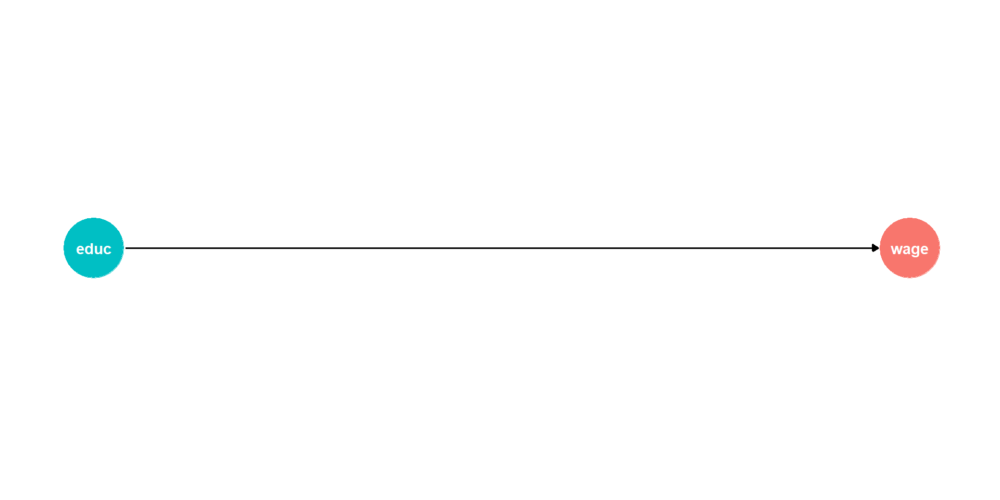
Drawing a DAG
Consider all the variables likely to be important to the data-generating process (including variables we can’t observe!)
For simplicity, combine some similar ones together or prune those that aren’t very important
Consider which variables are likely to affect others, and draw arrows connecting them
Test some testable implications of the model (to see if we have a correct one!)
Drawing a DAG
Drawing an arrow requires a direction - making a statement about causality!
Omitting an arrow makes an equally important statement too!
- In fact, we will need omitted arrows to show causality!
If two variables are correlated, but neither causes the other, likely they are both caused by another (perhaps unobserved) variable - add it!
There should be no cycles or loops (if so, there’s probably another missing variable, such as time)
DAG Example I
Example
what is the effect of education on wages?
Education \(X\), “treatment” or “exposure”
Wages \(Y\), “outcome” or “response”

DAG Example I
- What other variables are important?
- Ability
- Socioeconomic status
- Demographics
- Phys. Ed. requirements
- Year of birth
- Location
- Schooling laws
- Job connections

DAG Example I
In social science and complex systems, 1000s of variables could plausibly be in DAG!
So simplify:
- Ignore trivial things (Phys. Ed. requirement)
- Combine similar variables (Socioeconomic status, Demographics, Location) \(\rightarrow\) Background
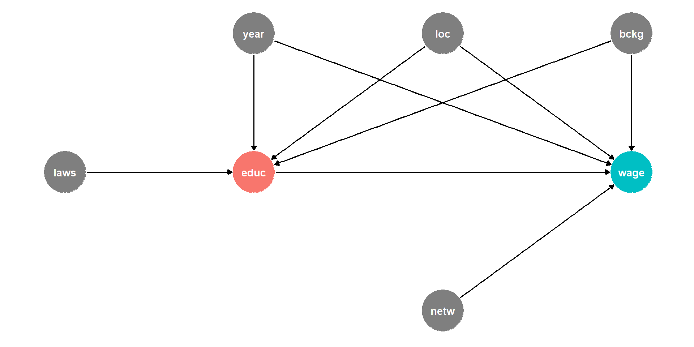
DAG Example II
Background, Year of birth, Location, Compulsory schooling, all cause education
Background, year of birth, location, job connections probably cause wages
DAG Example II
Background, Year of birth, Location, Compulsory schooling, all cause education
Background, year of birth, location, job connections probably cause wages
Job connections in fact is probably caused by education!
Location and background probably both caused by unobserved factor (
u1)
DAG Example II
This is messy, but we have a causal model!
Makes our assumptions explicit, and many of them are testable
DAG suggests certain relationships that will not exist:
- all relationships between
lawsandconxgo througheduc - so if we controlled for
educ, thencor(laws,conx)should be zero!
- all relationships between
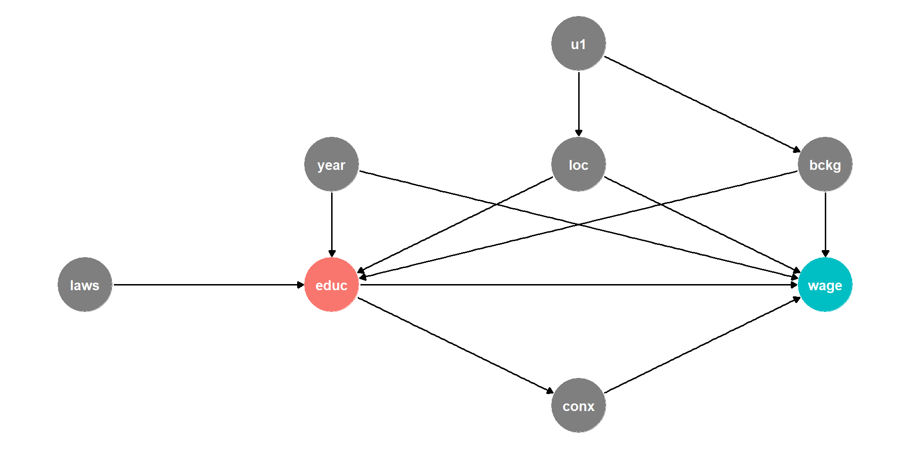
More on DAGS
Above exmaples came from: Econometrics by Ryan Safner
Do it yourself: Dagitty
A very nice read by the “father of DAGs”: Pearl and Mackenzie (2019).
See also: The Effect by Huntington-Klein (2021)
Causal Treatment Effect
Potential outcomes, counterfactuals, and the road not taken
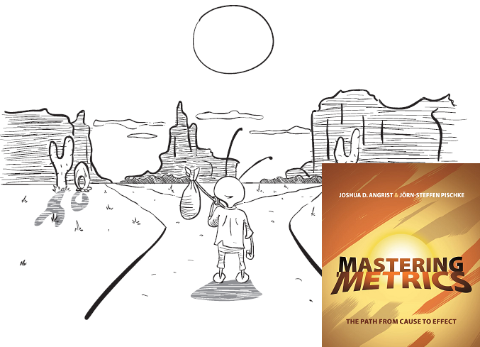The potential outcome framework
| Unit | Control | Treatment | Effect |
|---|---|---|---|
| \(i\) | \(Y_i^C\) | \(Y_i^T\) | \(\delta_i\) |
| 1 | 8 | 9 | 1 |
| 2 | 5 | 3 | -2 |
| 3 | 6 | 4 | -2 |
| 4 | 6 | 2 | -4 |
| 5 | 15 | 18 | 3 |
| 6 | 13 | 16 | 3 |
| 7 | 8 | 9 | 1 |
| 8 | 2 | 0 | -2 |
| 9 | 4 | 3 | -1 |
| 10 | 2 | 0 | -2 |
| Average | 6.9 | 6.4 | -0.5 |
\(D = T\): Treatment
\(D = C\): Control
\(Y = Y^T\) if \(D = T\)
\(Y = Y^C\) if \(D = C\)
Average causal effect:
\(\bar{\delta} = 6.4 - 6.9 = -0.5\)
Potential vs. observed outcomes
| Unit | Control | Treatment | D | Observed |
|---|---|---|---|---|
| \(i\) | \(Y_i^C\) | \(Y_i^T\) | \(Y_{obs}\) | |
| 1 | ? | 9 | T | 9 |
| 2 | 5 | ? | C | 5 |
| 3 | 6 | ? | C | 6 |
| 4 | 6 | ? | C | 6 |
| 5 | ? | 18 | T | 18 |
| 6 | ? | 16 | T | 16 |
| 7 | ? | 9 | T | 9 |
| 8 | 2 | ? | C | 2 |
| 9 | 4 | ? | C | 4 |
| 10 | 2 | ? | C | 2 |
| Average | 4.2 | 13 |
Observed effect:
13 - 4.2 = 8.8 !!
Wrong conclusions:
- Comparing the observed outcomes, we would assume a treatment effect of nearly 9…
- Problem: even in the absence of treatment, those in the treatment group are different from those in the control group.
Fundamental Problem of Causal Inference
For subject \(i\), the causal effect of the treatment is the difference between two potential outcomes:
- \(\delta_i = Y_i^T - Y_i^C\)
- \(Y_i^T\): \(i\)’s potential outcome in treatment
- \(Y_i^C\): \(i\)’s potential outcome in control
But only one of the two potential outcomes is realized/observed!
| Group | \(Y_i^T\) | \(Y_i^C\) |
|---|---|---|
| Treatment (\(D=T\)) | Observable | Counterfactual |
| Control (\(D=C\)) | Counterfactual | Observable |
The problem of confounding
Naive comparison of treated vs untreated is often biased
- Individuals select themselves into a treatment group, causing a bias.
- Some unobserved characteristics causes treatment and outcome, making the observed relationship spurious.
The problem of confounding
John Snow and Cholera: Youtube
Randomised Control Trials
A randomized control trial (RCT) / experimental design randomly assigns individuals to different levels of treatment.
Example: a drug trial with individuals randomly assigned to either receiving the drug (treatment) or a placebo (control or untreated).
- a simple assignment mechanism is to toss a coin.
- ideally the trial is a double-blind trial where neither the patient nor doctors know who received the drug and who received the placebo.
- The estimated treatment effect is simply the difference in means: \(E(Y^T) - E(Y^C)\).
Given that “a coin-toss” determines treatment, we completely rule out
- self-selection into treatment,
- confounding due to unobserved factors.
The beauty of randomisation
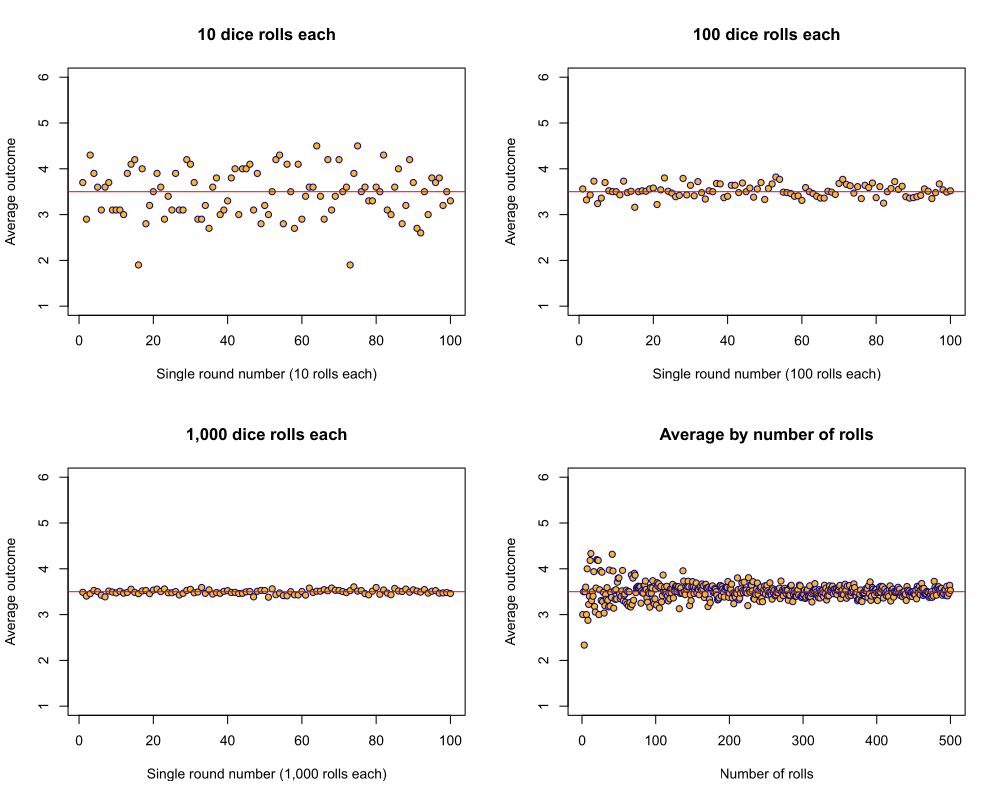
Law of large numbers
- if we randomly assign treatment
- and \(N\) is sufficiently large
- treatment and control group should be identical on average
- that applies to all their characteristics (e.g. gender, age, motivation, political views…)
Randomised Control Trials
Pros and Cons of RCTs
Pros
- Minimising bias
- Complete control
- Robust impact estimate
- “Gold standard”
Cons
- Often small sample size
- Sometimes low external validity
- Spillovers / Hawthorn effect
- Feasibility?
Example: Peer-group intervention
Carrell, Sacerdote, and West (2013)
- United States Air Force Academy
- Students were randomly assigned to peer groups
- RCTs show positive peer effect on academic performance
New experiment of policy instrument
- Assignment to “optimally” designed peer groups
- “Optimal” policy has negative effect on performance
“These results illustrate how policies that manipulate peer groups for a desired social outcome can be confounded by changes in the endogenous patterns of social interactions within the group.”
Example: Peer-group intervention
Carrell, Sacerdote, and West (2013)
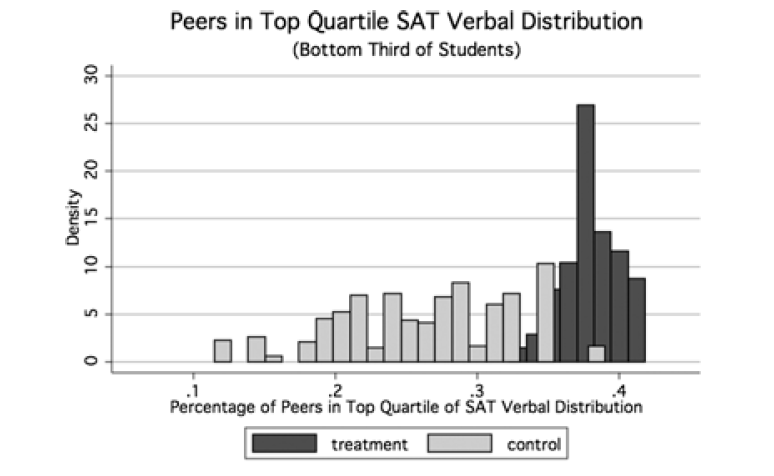Impact evaluation using secondary data
Impact evaluation using secondary data
In impact evaluation (as in social sciences), we are interested in the causal research questions
- we want to investigate questions of cause and effect.
- RCTs provide a way to circumvent the problems of causal inference.
- However, randomly exposing some individuals to treatment and withholding treatment from others can be tricky (e.g. education, marriage).
A potential compromise: Compare alike with alike
The Effect (Huntington-Klein 2021) is a great online resource .
Instrumental Variables (IV)
IV: The problem
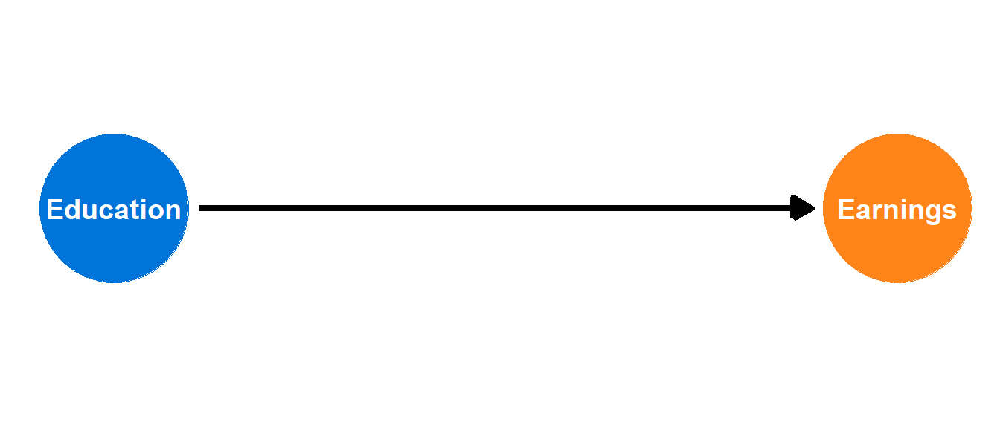\[\color{#FF851B}{\text{Earnings}_i} = \beta_0 + \beta_1 \color{#0074D9}{\text{Education}_i} + \varepsilon_i\]
If we ran this regression, would \(\beta_1\) give us the causal effect of education?
No!
- Omitted variable bias!
- Endogeneity!
IV: The problem
Exogenous variables
- Value is not determined by anything else in the model
- In a DAG, a node that doesn’t have arrows coming into it
Endogenous variables
- Value is determined by something else in the model
- In a DAG, a node that has arrows coming into it
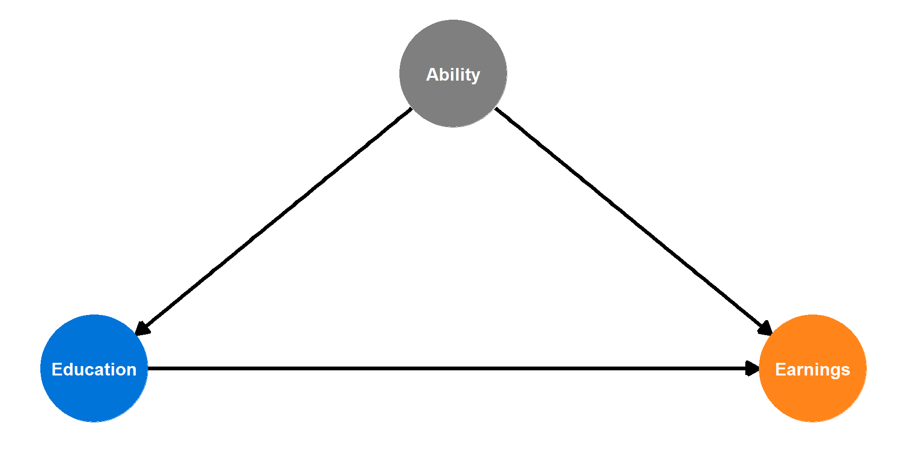
Parts of education is endogenous, parts of it is exogenous.
Can we isolate the exogenous part?
What is an instrument?
“Instead of randomizing the variable ourselves, we hope that something has already randomized it for us. We look in the real world for a source of randomization of our treatment” (Huntington-Klein 2021)
- Relevance: Something that is correlated with the policy variable.
- Exclusion: Something that does not directly cause the outcome.
- Exogeneity: Something that is not correlated with the omitted variables.
What is an instrument?
Example of instrument
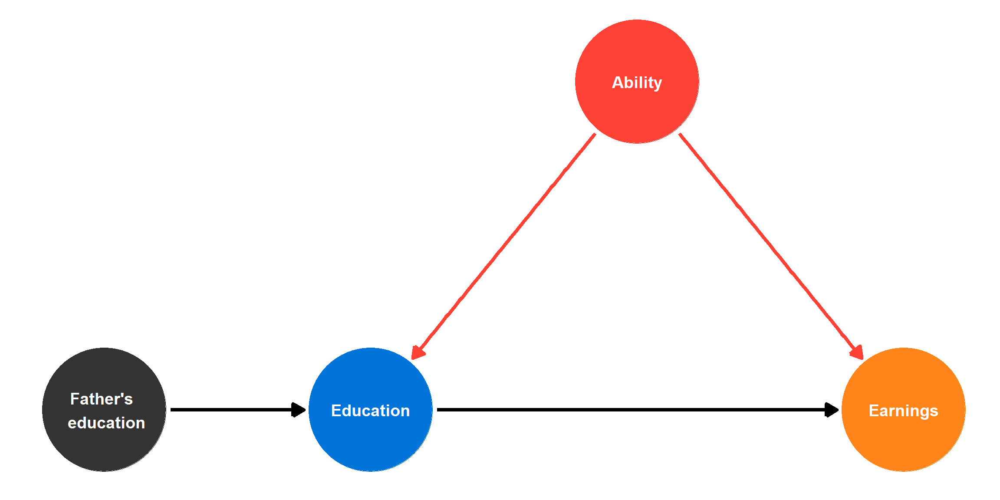Intuitions from Instruments & 2SLS
- The 2 stage least squares (2SLS) estimators for IVs:
\[ \begin{align} {\color{#c5c5c5}{\text{Endogenous model}}}& &\color{green}{\text{Outcome}_i} &= \beta_0 + \beta_1 \color{red}{\left( \text{Endog. var.} \right)_i} + u_i\\[0.5em] {\text{First stage}}& &\color{red}{\left( \text{Endog. var.} \right)_i} &= \pi_0 + \pi_1 \color{blue}{\text{Instrument}_i} + v_i\\[0.25em] {\text{Second stage}}& &\color{green}{\text{Outcome}_i} &= \delta_0 + \delta_1 \color{red}{\widehat{\left( \text{Endog. var.} \right)}_i} + \varepsilon_i\\[0.5em] {\color{#c5c5c5}{\text{Reduced form}}}& &\color{green}{\text{Outcome}_i} &= \pi_0 + \pi_1 \color{blue}{\text{Instrument}_i} + w_i\\[0.25em] \end{align} \]
where \(\color{red}{\widehat{\left( \text{Endog. var.} \right)}_i}\) are the predicted values (fitted values) from the first-stage regression. They only contain the variance in \(\color{red}{\left( \text{Endog. var.} \right)_i}\) that comes from \(\color{blue}{\text{Instrument}_i}\).
IV example: Family size and education
Child-quantity/child-qualitytrade-off (Angrist, Lavy, and Schlosser 2010)
- How does family size affect education and economic situation of children?
- Assumption A: Increase in family size reduces parental investment in each child
- Assumption B: Parents may compensate by additional “investments”
- Problem: Family size depends on many other characteristics of the family
Two possible instruments:
- Twins: After first-born, family receives twins
- Same-sex: First children having same sex increases preferences for additional
See also Angrist and Pischke (2015).
IV example: Family size and education
First stage: Family size
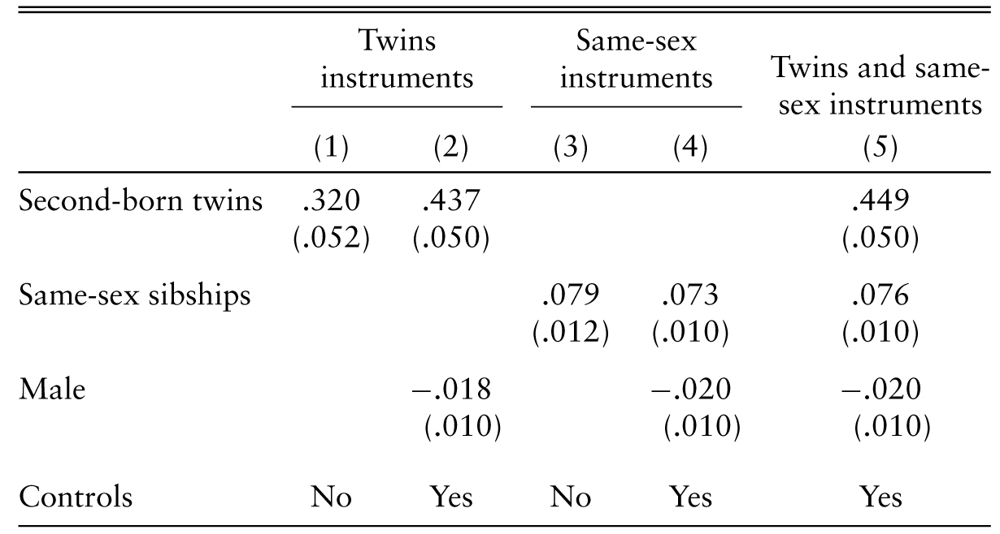IV example: Family size and education
First stage: Family size
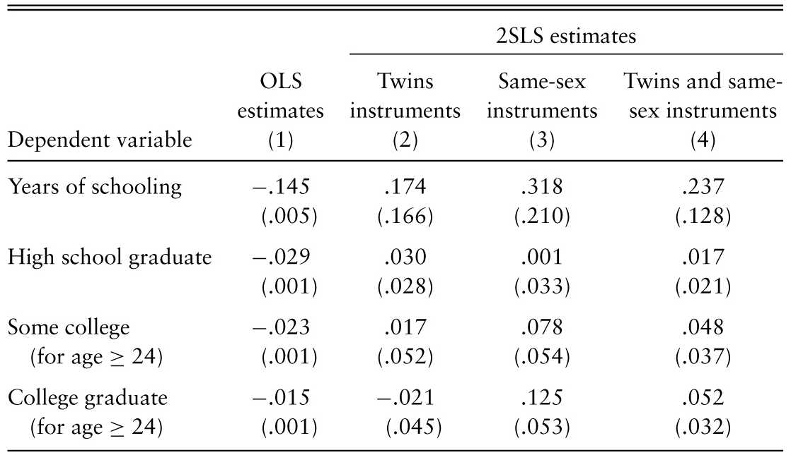Examples of instruments
| Outcome | Policy | Unobserved stuff | Instrument |
|---|---|---|---|
| Income | Education | Ability | Father's education |
| Income | Education | Ability | Distance to college |
| Income | Education | Ability | Military draft |
| Health | Smoking cigarettes | Other negative health behaviors | Tobacco taxes |
| Crime rate | Patrol hours | # of criminals | Election cycles |
| Crime | Incarceration rate | Simultaneous causality | Overcrowding litigations |
| Labor market success | Americanization | Ability | Scrabble score of name |
| Conflicts | Economic growth | Simultaneous causality | Rainfall |
Instruments are hard to find!
\(\color{red}{\text{Exlusion restriction}}\)
- Instrument causes the outcome only through the policy
- For instance, rainfall is not a good instrument instrument (Mellon 2020)
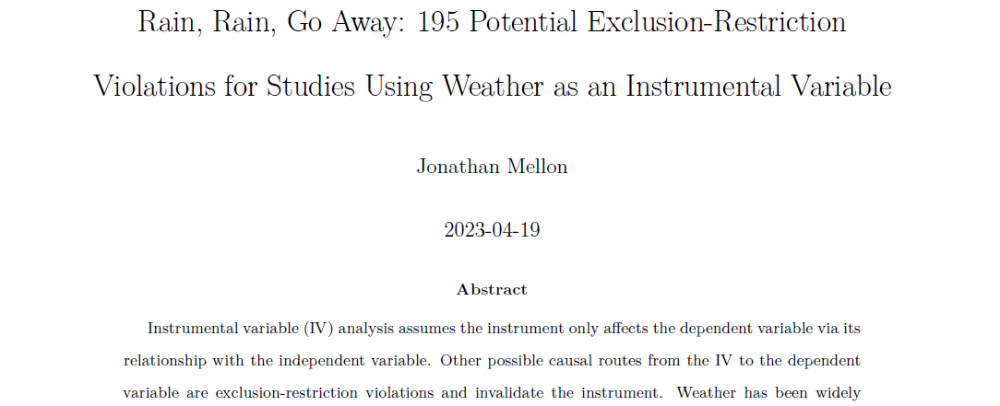
Regression Discontinuity Designs (RDD)
RDD: The idea
“Whenever some treatment is assigned discontinuously - people just on one side of a line get it, and people just on the other side of the line don’t, might be a little different, but not that different.” (Huntington-Klein 2021)
Quasi-experimental design
- Lots of policies and programs are based on arbitrary rules and thresholds.
- If you’re above the cutoff/threshold, you’re in the program; if you’re below, you’re not (or vice versa).
- Wether you are closely above or below the cutoff/threshold is as good as random.
The nice examples come from Program Evaluation by Andrew Heiss.
RDD: The idea
Random variation around cutoff
- Running variable: continuous variable that determines whether you’re treated or not (e.g. score, time, distance).
- Cutoff: The cutoff is the value of the running variable that determines whether you get treatment.
- Bandwidth: It’s reasonable to think that people just barely to either side of the cutoff are basically the same other than for the cutoff.
RDD: Hypothetical example
Imagine: A entrance exam and those who score 70 or lower get additional training.
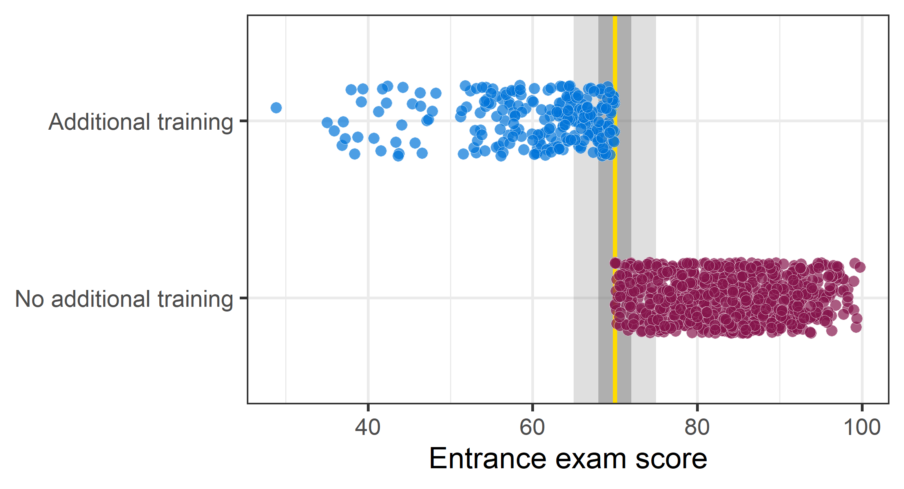RDD: Hypothetical example
Imagine: A entrance exam and those who score 70 or lower get additional training.
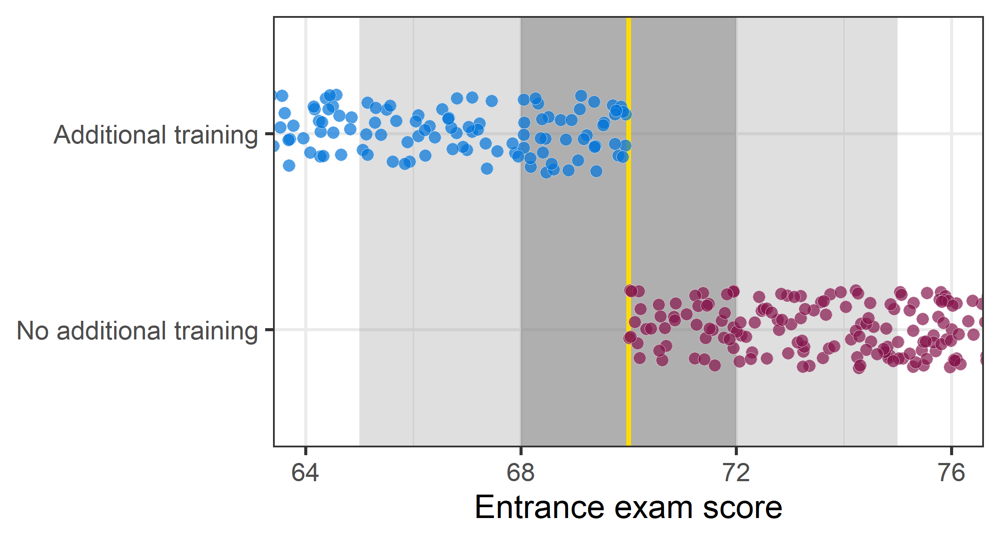RDD: Hypothetical example
To asses the effect of the additional training
- we compare those above and below the treatment cutoff
- within the specified bandwidth
- and assume that they are nearly identical otherwise (as good as random)
Calculate the difference between treatment and control.
RDD: Hypothetical example
In a regression framework:
\[ y_{i} = \alpha + \beta_1 D_{i} + \beta_2 [\text{Running - Cutoff}]_{i} + \beta_3 (D_{i} \times [\text{Running - Cutoff}]_{i}) + \varepsilon{i}, \]
- \(D_{i}\): Whether an observation is in treatment group (above cutoff)
- \([\text{Running - Cutoff}]_{t}\): running variable centered around the cutoff (positive after)
- \(\alpha + \beta_2\) are intercept and slope for untreated (before cutoff)
- \((\alpha + \beta_1) + (\beta_2 + \beta_3)\) are intercept and slope for treated (after cutoff)
\([\text{Running - Cutoff}]_{t}\) can be replace by any flexile function \(f[\text{Running - Cutoff}]_{t}\).
See Huntington-Klein (2021).
RDD: Hypothetical estimate
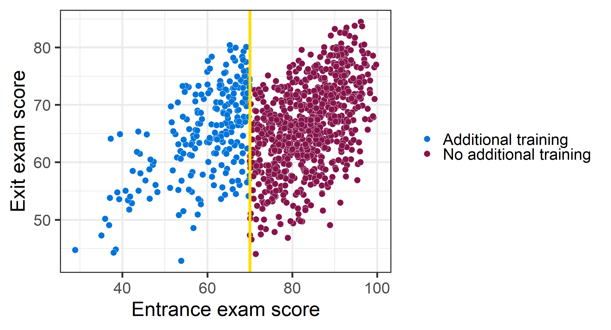RDD: Hypothetical estimate
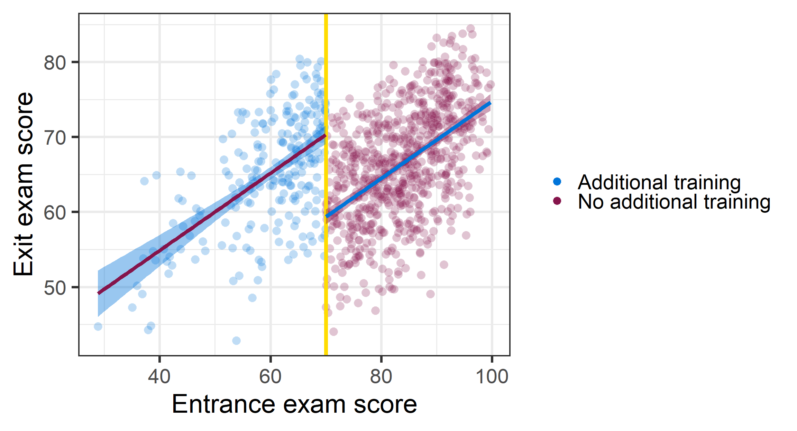RDD: Hypothetical estimate
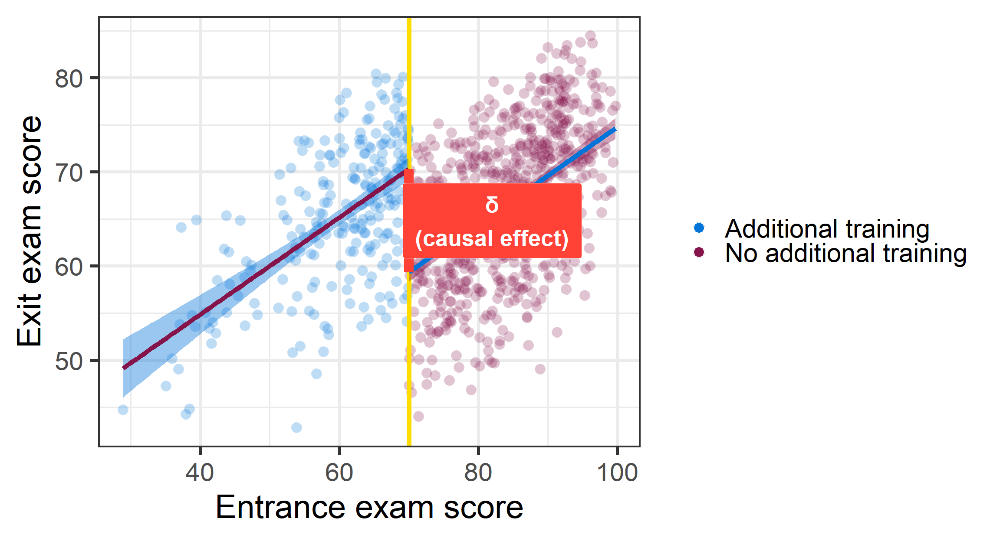RDD: Hypothetical estimate
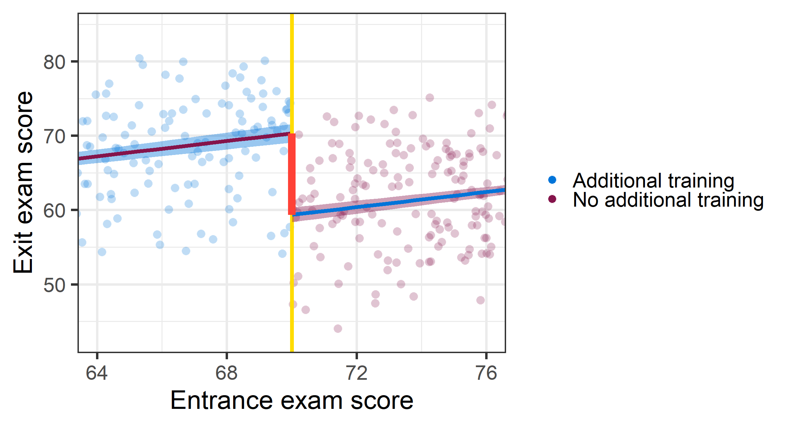RDD: There’s no one right way
- The size of the gap depends on how you draw the lines on each side of the cutoff
- The type of lines you choose can change the estimate of \(\delta\) - sometimes by a lot!
The researcher’s degree of freedom
- Parametric vs. non-parametric lines
- Bandwidths (common sense or algorithms?)
- Kernels (weights by distance to cutoff?)
It’s important: Lines should fit the data well!
RDD: Drawing lines
Check higher order polynomials!
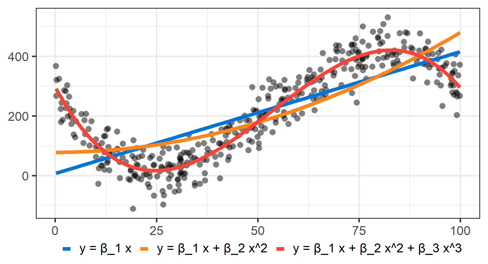RDD: Drawing lines
Non-parametric methods like LOESS (Locally estimated scatterplot smoothing)
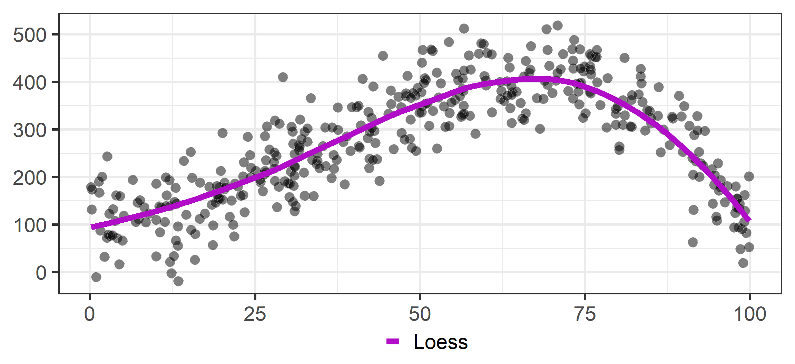RDD: Naturalisation & Political integration
Hainmueller, Hangartner, and Pietrantuono (2015):
- Switzerland, where some municipalities used referendums as the mechanism to decide naturalization requests
Heatwave exposure & pro-environmental behaviour
Rüttenauer (2023)
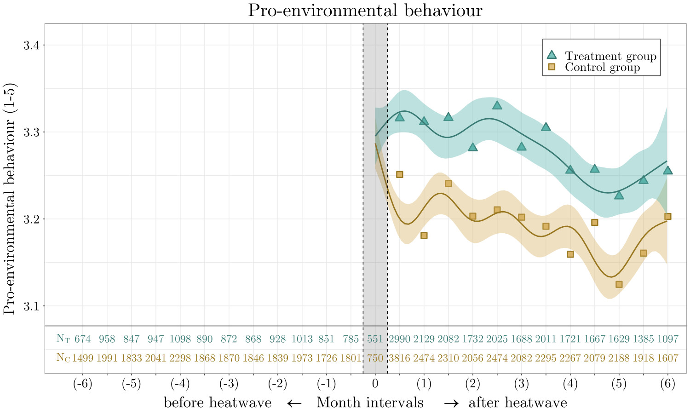Heatwave exposure & pro-environmental behaviour
Rüttenauer (2023)
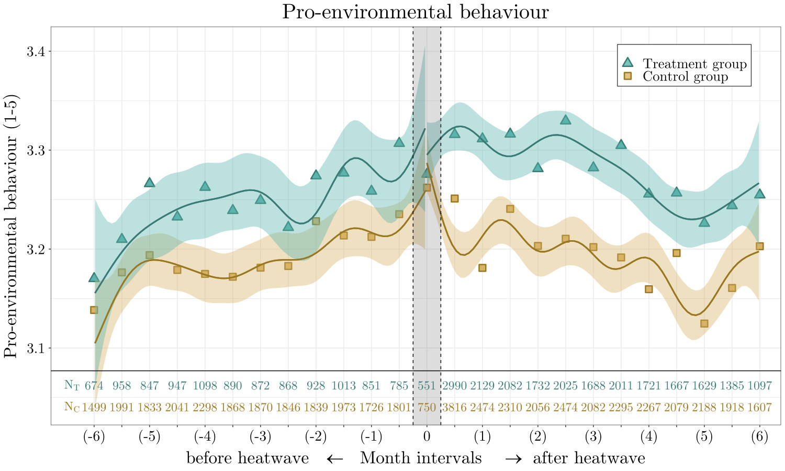Paris terror attack and discrimination on AirBnB
Wagner and Petev (2019)
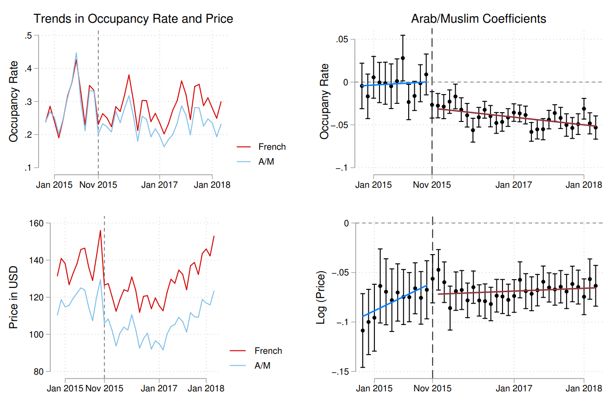Difference-in-Difference (DiD) Methods
DiD: Problems
Comparing only before/after
- You’re only looking at the treatment group!
- Impossible to know if change happened because of treatment or just naturally
Comparing only treatment/control
- You’re only looking at post-treatment values
- Impossible to know if change happened because of natural growth
Simple DiD setup: Diff 1
| Pre mean | Post mean | ∆ (post − pre) | |
|---|---|---|---|
| Control | A (never treated) |
B (never treated) |
B − A |
| Treatment | C (not yet treated) |
D (treated) |
D − C |
| ∆ (treatment − control) |
A − C | B − D | (B − A) − (D − C) or (B − D) − (A − C) |
\(\Delta\) (post − pre) = within-unit difference
Simple DiD setup: Diff 2
| Pre mean | Post mean | ∆ (post − pre) | |
|---|---|---|---|
| Control | A (never treated) |
B (never treated) |
B − A |
| Treatment | C (not yet treated) |
D (treated) |
D − C |
| ∆ (treatment − control) |
C − A | D − B | (B − A) − (D − C) or (B − D) − (A − C) |
\(\Delta\) (treatment − control) = across-group difference
Simple DiD setup: Diff in Diff
| Pre mean | Post mean | ∆ (post − pre) | |
|---|---|---|---|
| Control | A (never treated) |
B (never treated) |
B − A |
| Treatment | C (not yet treated) |
D (treated) |
D − C |
| ∆ (treatment − control) |
C − A | D − B | (D − C) − (B − A) or (D − B) − (C − A) |
\(\Delta\) within units − \(\Delta\) within groups = Differences-in-differences = causal effect!
Simple DiD setup

Important:
Parallel trends assumption
“In the absence of treatment, the treatment group would have had the same trend over time than the control group”
No anticipation
“The treatment only affects the treatment group from the treatment period onwards”
Simple DiD as regression
The 2 \(\times\) 2 Diff-in-Diff as an interaction term:
\[ y_{it} = \alpha + \gamma D_{i} + \lambda Post_{t} + \delta_{DD} (D_{i} \times Post_{t}) + \upsilon_{it}, \]
- \(D_{i}\): Whether an observation is in treatment group
- \(Post_{t}\): Whether an observation is after treatment
- \(D_{i} \times Post_{t}\): Treatment group after treatment
\(\delta_{DD}\) gives the Diff-in-Diff estimator:
\[ \hat{\delta}_{DD} = \mathrm{E}(\Delta y_{T}) - \mathrm{E}(\Delta y_{C}) = [\mathrm{E}(y_{T}^{post}) - \mathrm{E}(y_{T}^{pre})] - [\mathrm{E}(y_{C}^{post}) - \mathrm{E}(y_{C}^{pre})]. \]
Two-ways Fixed Effects
In settings with multiple periods, we rely on the two-ways FE estimator:
\[ y_{it} = \beta_{TWFE} D_{it} + \alpha_i + \zeta_t + \epsilon_{it}. \]
With only two periods, a binary treatment, and all observations untreated in \(t=1\),
- \(\hat{\delta}_{DD} = \hat{\beta}_{TWFE}\),
- intuitively interpretable.
With multiple treatment groups and periods, it is a little bit more complicated. However, in an ideal setting, the FE estimator is a weighted average of many \(2 \times 2\) DiD estimators (Goodman-Bacon 2021; Roth et al. 2023)
Monetary Intervention & Banking Panics
Richardson and Troost (2009)
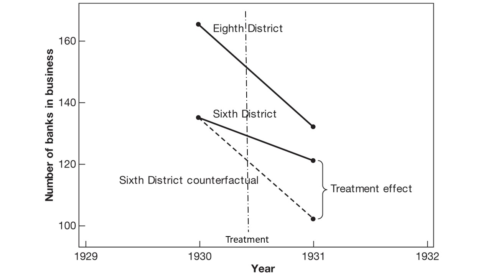Monetary Intervention & Banking Panics
Parallel trends?
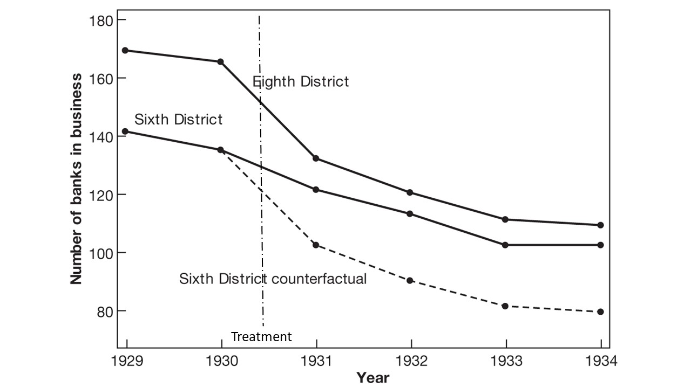Two-ways Fe with multiple treatment periods

Figure from Goodman-Bacon (2021)
Dynamic Treatment Effects
Treatment timing
- Units often receive treatment at different times.
Treatment dynamic
- Treatment effects unfold over time.
Treatment heterogeneity
- Some (treatment) groups may have different treatment effects than others.
This can (in some cases) be an issue for your estimate (Goodman-Bacon and Marcus 2020).
Several new “dynamic” DiD estimators explicitly address the issue (Roth et al. 2023).
Event Study Design
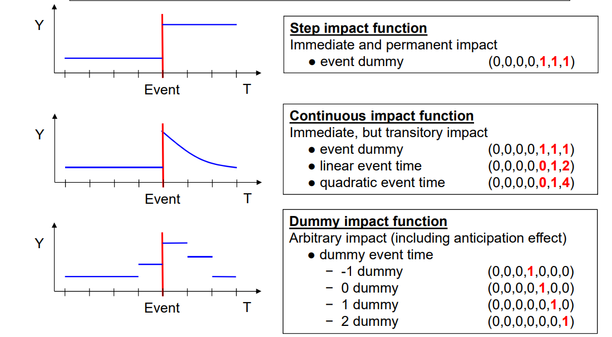Dynamic Diff-in-Diff
- generalizes this \(2 \times 2\) Diff-in-Diff to a multi-group and multi-timing setting by computing group-time average treatment effects
- for each treatment-group \(g\) and time period \(t\)
\[ \delta_{g,t} = \mathrm{E}(\Delta y_{g}) - \mathrm{E}(\Delta y_{C}) = [\mathrm{E}(y_{g}^{t}) - \mathrm{E}(y_{g}^{g-1})] - [\mathrm{E}(y_{C}^{t}) - \mathrm{E}(y_{C}^{g-1})], \]
where the control group can either be the never-treated or the not-yet-treated.
Summary measure / average (Callaway and Sant’Anna 2020):
\[ \theta_D(e) := \sum_{g=1}^G \mathbf{1} \{ g + e \leq T \} \delta(g,g+e) P(G=g | G+e \leq T), \]
where \(e\) specifies for how long a unit has been exposed to the treatment.
Dynamic Diff-in-Diff
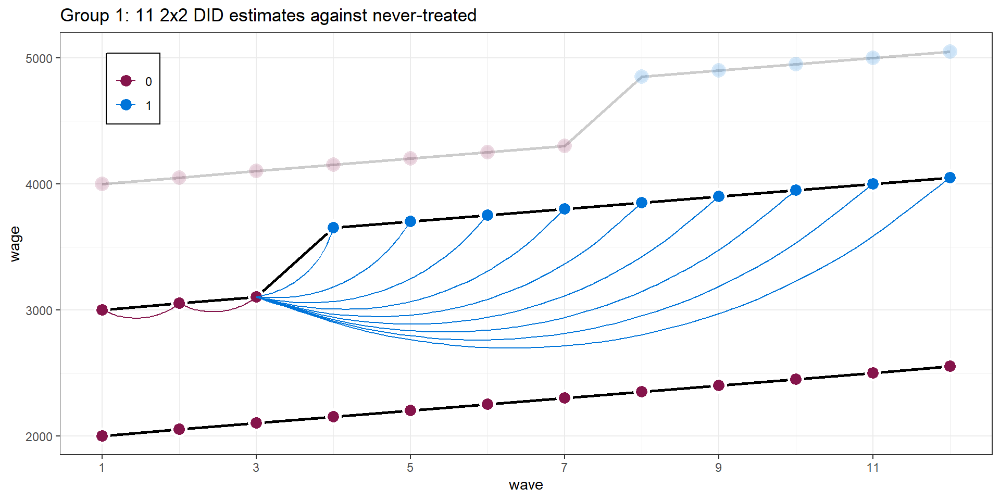
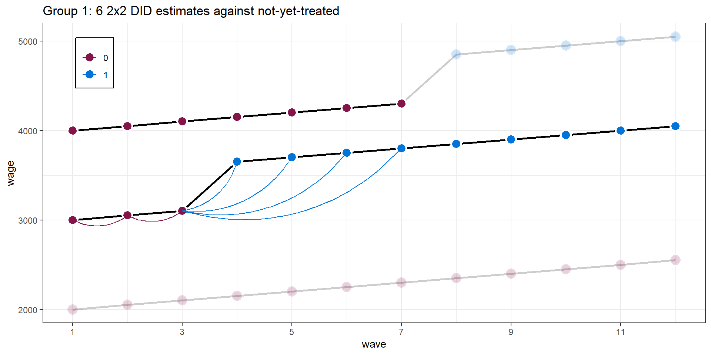
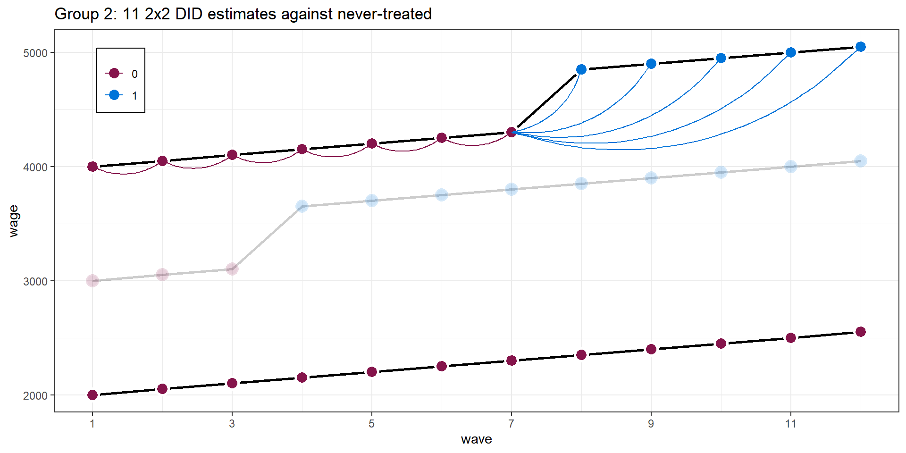
Industrial plant openings & resident’s income
Rüttenauer and Best (2021)
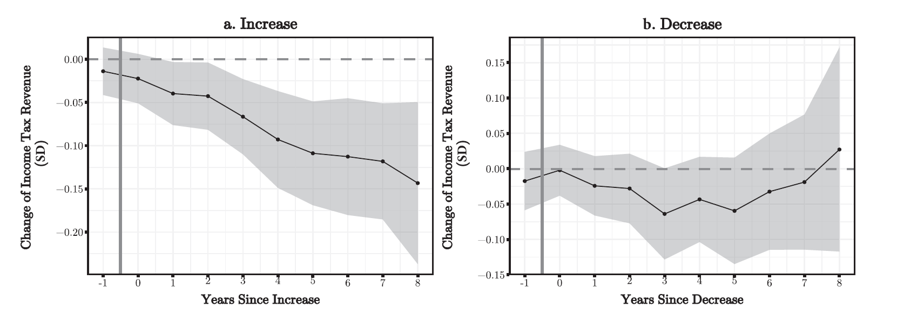Life course events & Happiness
Clark and Georgellis (2013)
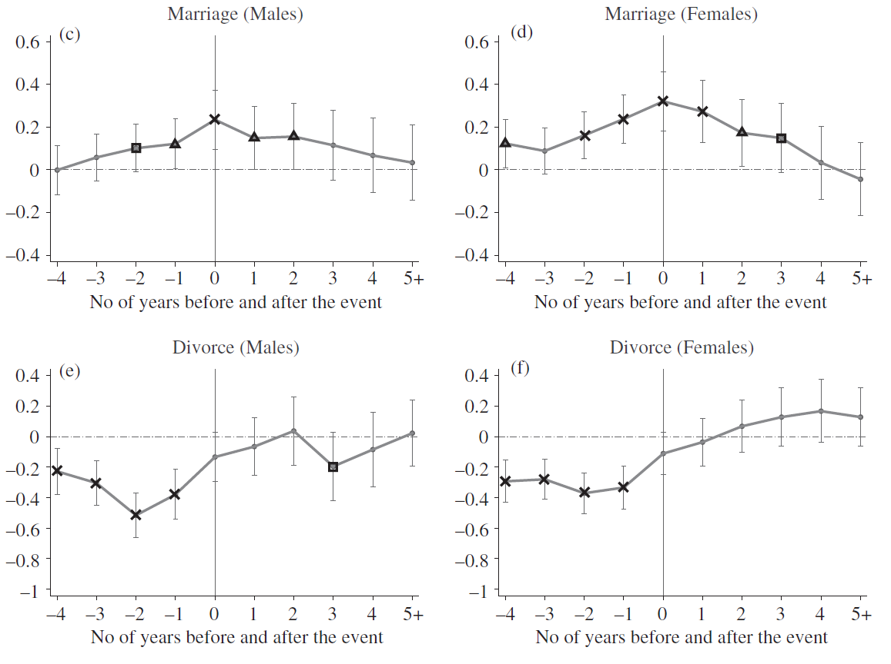References
Angrist, Joshua David, Victor Lavy, and Analia Schlosser. 2010. “Multiple Experiments for the Causal Link Between the Quantity and Quality of Children.” Journal of Labor Economics 28 (4): 773–824. https://doi.org/10.1086/653830.
Angrist, Joshua David, and Jörn-Steffen Pischke. 2015. Mastering ’Metrics: The Path from Cause to Effect. Princeton: Princeton Univ. Press.
Callaway, Brantly, and Pedro H. C. Sant’Anna. 2020. “Difference-in-Differences with Multiple Time Periods.” Journal of Econometrics 72 (5): 1. https://doi.org/10.1016/j.jeconom.2020.12.001.
Carrell, Scott E., Bruce I. Sacerdote, and James I. West. 2013. “From Natural Variation to Optimal Policy? The Importance of Endogenous Peer Group Formation.” Econometrica 81 (3): 855–82. https://doi.org/10.3982/ECTA10168.
Clark, Andrew E., and Yannis Georgellis. 2013. “Back to Baseline in Britain: Adaptation in the British Household Panel Survey.” Economica 80 (319): 496–512. https://doi.org/10.1111/ecca.12007.
Goodman-Bacon, Andrew. 2021. “Difference-in-Differences with Variation in Treatment Timing.” Journal of Econometrics 225 (2): 254–77. https://doi.org/10.1016/j.jeconom.2021.03.014.
Goodman-Bacon, Andrew, and Jan Marcus. 2020. “Using Difference-in-Differences to Identify Causal Effects of COVID-19 Policies.” Survey Research Methods 14 (2): 153–58. https://doi.org/10.18148/SRM/2020.V14I2.7723.
Hainmueller, Jens, Dominik Hangartner, and Giuseppe Pietrantuono. 2015. “Naturalization Fosters the Long-Term Political Integration of Immigrants.” Proceedings of the National Academy of Sciences of the United States of America 112 (41): 12651–56. https://doi.org/10.1073/pnas.1418794112.
Huntington-Klein, Nick. 2021. The Effect: An Introduction to Research Design and Causality. Boca Raton: Chapman & Hall/CRC.
Mellon, Jonathan. 2020. “Rain, Rain, Go Away: 137 Potential Exclusion-Restriction Violations for Studies Using Weather as an Instrumental Variable.” SSRN Electronic Journal. https://doi.org/10.2139/ssrn.3715610.
Pearl, Judea, and Dana Mackenzie. 2019. The Book of Why: The New Science of Cause and Effect. UK: Penguin Books.
Richardson, Gary, and William Troost. 2009. “Monetary Intervention Mitigated Banking Panics During the Great Depression: Quasi-Experimental Evidence from a Federal Reserve District Border, 1929.” Journal of Political Economy 117 (6): 1031–73. https://doi.org/10.1086/649603.
Roth, Jonathan, Pedro H. C. Sant’Anna, Alyssa Bilinski, and John Poe. 2023. “What’s Trending in Difference-in-Differences? A Synthesis of the Recent Econometrics Literature.” Journal of Econometrics 235 (2): 2218–44. https://doi.org/10.1016/j.jeconom.2023.03.008.
Rüttenauer, Tobias. 2023. “More Talk, No Action? The Effect of Exposure to Extreme Weather Events on Climate Change Concern and Pro-Environmental Behaviour.” European Societies Forthcoming. https://doi.org/10.31235/osf.io/574uf.
Rüttenauer, Tobias, and Henning Best. 2021. “Environmental Inequality and Residential Sorting in Germany: A Spatial Time-Series Analysis of the Demographic Consequences of Industrial Sites.” Demography 58 (6): 2243–63. https://doi.org/10.1215/00703370-9563077.
Wagner, Sander, and Ivaylo Petev. 2019. “The Economic Penalty of Terrorism: Increase in Discrimination Against Arabs and Muslims After Paris Attacks.” CREST Série des Documents de Travail.